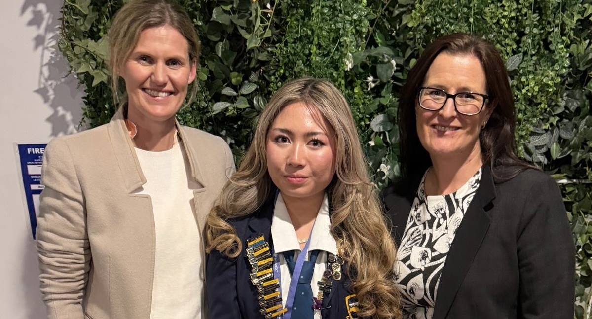
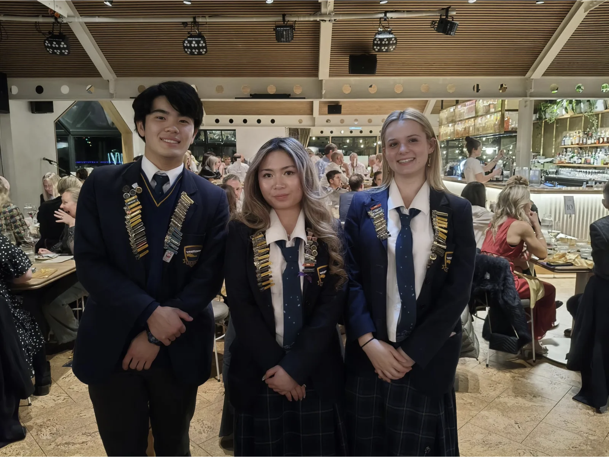

Kia Ora,
I'm Samantha Sison
From Queenstown
2027 Computer Science & Finance Student
Passionate about technology, business and the opportunities they can create for people and communities.
Discover My Story →Purpose & Impact
Kia ora, I’m Samantha Sison - though most know me as Sammy. As a Year 13 student and Deputy Head Girl at Wakatipu High School heading to the University of Auckland in 2027 to study Computer Science and Finance, my motivation lies in understanding how systems work and how technology can solve complex, real world problems.
I am driven by a desire to bridge the gap between regional talent and high-level opportunities. Growing up outside major centers has shown me that potential is everywhere, but access is not always equal. My goal is to work at the intersection of technology, business, and governance; building scalable digital solutions while creating clearer pathways for young people to thrive regardless of where they start.
I believe in taking initiative early, maintaining high personal standards, and learning continuously. I am at my best when stepping out of my comfort zone, collaborating with ambitious people, and problem-solving in projects that create lasting value.
At a glance
- Based: Queenstown, New Zealand
- School: Wakatipu High School
- 2026: Deputy Head Girl
- 2026: Spirit of the Wakatipu Rising Star Award
- 2027: Computer Science + Finance at UoA
- Interests: Technology, finance, business & innovation
- Community: Mentoring, volunteering & youth advocacy
- International: LIYSF presenter & participant at Imperial College London
- Work: Skyline Enterprises
Skills & Technologies
Tools and languages I work with across digital systems and data.
Languages & Core
Cloud & Databases
Tools & Platforms
My Journey
Growing up in Queenstown, I used to assume real tech experience was something that only happened in big cities or overseas. Here is how stepping out of my comfort zone proved to me that regional students don't have to leave home to create an impact.
Learning Beyond the Classroom
I began exploring science and technology beyond class through GirlBossNZ and GirlsWhoGrowNZ. Working on healthcare & AI, to co-leading an agricultural filtration research for local Otago farmers showed me how technology can be used to solve real problems in our community.
Community & Mentorship
I wanted to put my skills to practical use locally, so I started volunteering with Whakatipu Youth Trust to improve their website systems and data organization. At the same time, tutoring math and mentoring younger students showed me that giving back brings a completely different kind of fulfillment.
Skyline ICT Summer Internship
Skyline Enterprises' summer internship was definitely a defining moment for myself. In a team of four, we built an AI customer sentiment analysis app from scratch using live data. Ollie and I focused on front-end and API connections while Alicia and Oscar managed the database. Presenting our working platform to the CEO, GMs, gave me a level of confidence I couldn't have built anywhere else.
Spirit of the Wakatipu Rising Star Recipient
Stepping up in leadership, pilantrophy, community, sport, and advocacy, taught me that confidence isn't about fitting into a room - it’s having the courage to be yourself once you’re in it. I was deeply humbled to be named the 2026 Spirit of the Wakatipu Rising Star (Under 25) recipient this October.
Next: The University of Auckland
I'm heading to the University of Auckland to study a conjoint degree in Computer Science and Finance. Seeing how tech and business intersect in practice made me realise what's possible. My goal is to bring those skills back home to Queenstown to create opportunities for the next generation.
What I've Built
I enjoy projects where technology is more than just a task. I want what I build to have a practical use.
Skyline Sentiment Analysis
During my ICT internship at Skyline Enterprises (2026), I worked in a team of four to develop an AI-driven customer analysis web application. The system processes Google and TripAdvisor reviews, identifies sentiments and themes, and presents the results through an interactive dashboard.
EcoSmart Energy Tracker
Through GirlBossNZ (2026), I developed a business model for an energy tracking application designed to help households and businesses better understand their energy consumption and make more sustainable decisions. In 2024, I also conducted a research about using AI in healthcare.
GirlsWhoGrowNZ
I co-led a research project investigating agricultural water filtration and irrigation improvements for local Otago farmers, combining scientific research with a focus on practical environmental solutions.
Whakatipu Youth Trust 2026
I volunteer my technical skills with Whakatipu Youth Trust, helping maintain their website, improve sign-up systems, organise user information and connect website processes with webpress and microsoft data systems.

JBWere Impact100 Whakatipu
As the 2026 youth recipient, I worked alongside local female leaders to assess charity proposals and contribute youth perspectives to the allocation of $188,000 in community grants.

Youth Leadership & Mentoring
From serving as Deputy Head Girl to mentoring Year 9 students, tutoring mathematics and science, and leading Science Buskers, I enjoy creating opportunities for other students to learn and get involved.
Outside the résumé
I strive to build an all rounded character and lifestyle. Some of my favourite experiences happen outdoors around Queenstown: skiing, hiking, and staying active.
I also have a creative side: school musicals, hair and backstage makeup, photography, cooking, painting, designing, and finding little ways to romanticise ordinary days.
Click to filter vibe
Let's Connect
Whether you're interested in technology, business, youth opportunities or simply want to say kia ora, I'd love to hear from you.
"I want to build a future where opportunity isn't determined by where you grow up."
— Samantha Sison